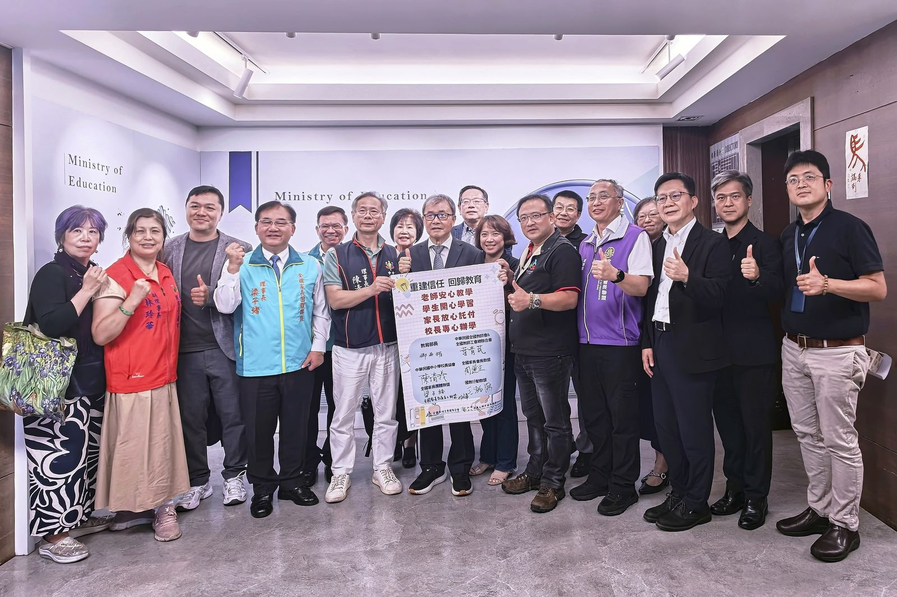

先說清楚三件事
- 1. 這頁不是指控。 已經改善的措施應該被看見；我們列的是「查得到什麼」，查不到不等於沒做。
- 2. 判定詞只有四個：已核定、部分兌現、方向重申、待查。本頁不使用其他負面定性用語。
- 3. 口徑不同就並列。 教育部書面稿寫「已精進或規劃於近期調整」，中央社稿（聯合新聞網轉載）寫「已完成調整」（來源 1、來源 2）。本頁一律採教育部原文，並把媒體用語的差異寫出來，讓讀者自己判斷。
一、三年時間軸（2024 → 2026）
2024 年
教師節前夕發布新聞稿，提出 5 點呼籲：新政策應與教師核心工作結合、表單資料蒐集應有明確目的、簡化表單與報告流程、增設專職行政人員、明確教師職責分工（來源 10）。新聞稿引述 2023 年『台灣中小學老師工作快樂情形大調查』（未來台灣學會、瑩光教育協會委託世新大學民調中心，n＝3,827，2023-07-25～08-07，來源 24）：教師每日平均工作時數 10.2 小時，其中專任教師行政工作 2.5 小時、兼任行政教師（組長）4.7 小時、校長主任行政工作 5.8 小時（來源 10）。
2025 年
提出三項可驗收要求——「表單總量管制＋改版凍結」「一次蒐集、跨單位共用」「濫訴節流、案管分級」；並主張調高導師職務加給、新增「輔導專業職務加給」（來源 11）。同時指出：國中小導師費自 2012 年調為 3,000 元後已 13 年未調，高中職自 2017 年起已 8 年未調（來源 11）。〔編按：此為本盟 2025 年發布當時的主張，已被 2025-12-31 教育部調整追過。〕
公布 2025 年教師節教育施政意見調查，據報導有超過一萬一千名大專與高國中小幼兒園教師填答。在「最應立刻執行的政策」題組中，「捍衛專業，當教師後盾」獲 89.2% 勾選，「真正落實行政減量」87.4%、「調高教師待遇」86.6%（來源 3）。另一題組「最應立刻停止的政策」中，96.7% 教師要求廢止「無差別受理校園投訴機制」（來源 3）。〔兩個題組不同，請勿併為同一排序。以上數字為經濟日報轉述全教總調查，本盟未取得全教總原始調查報告。〕
公布中小學行政減量成果：已盤點 150 項工作項目，其中「已精進或規劃於近期調整之措施共104項（占69％）」（來源 1）。同日公告教師待遇調整：公立高級中等以下學校導師職務加給由每月 3,000 元調高至 4,000 元；兼任及代課教師鐘點費調增 20%（國小 336→405 元、國中 378→455 元、高中職 420→505 元）；並按工作表現評價增給每月 1,000 元至 2,000 元不等之行政工作獎金。上述措施追溯自民國 114 年 9 月 1 日（2025-09-01）起生效，受惠教師人數約 30 萬人（來源 1；導師職務加給之法源見來源 20）。〔「約30萬人」為教育部自陳，本盟未查得獨立覆核來源。〕
同日，教育部主任秘書林伯樵受訪時表示，104 項「超過原訂的50%目標」（來源 2）。〔此語見於中央社稿（聯合新聞網轉載），教育部書面新聞稿全文查無「50%目標」字樣；引用時請註明來源為媒體訪問。〕
2026 年
太報報導回顧：教育部自 2017 年起推動高中評鑑簡化，評鑑項目簡化程度達 56.25%、評鑑指標簡化度 70.66%；並簡化高級中等學校評鑑相關報表，27.8% 欄位可直接匯出已填報資料（來源 4）。〔以上數字為太報引述國教署新聞稿；本盟未查得國教署原始文件，母體與計算基準以太報引述為準。〕2020 年起特教評鑑延長為 4 年 1 次，高中評鑑報表與競爭型計畫改線上審查（來源 4）。
同篇報導也記錄第一線的擔憂：高雄中學校長莊福泰擔憂這個學年結束後，9 月新學年開始時恐怕會出現更激烈的「行政逃亡」（來源 4，記者轉述）。一位在國中擔任代理組長 8 年的受訪者（化名阿文）說行政減量「沒什麼感覺」，比喻行政減量就像減肥：「少吃多動大家都知道，但如果沒像有營養師規劃，那就很難」（來源 4）。
記者會批評行政減量淪為空談。理事長侯俊良表示：「哪些事不該由學校扛？哪些事不該由教師做？唯有建立明確的學校業務邊界，並配置專職行政人力承接庶務，才能將教師從繁瑣的行政雜務中抽離，讓教師回歸專業，真正落實行政減量。」同篇報導載，教育部下周起將針對行政減量議題辦理分區座談（來源 5）。〔座談的場次、日期、參與人數與結論，本盟查無教育部官方公告。〕
柯志恩、陳培瑜、葛如鈞、陳秀寶、郭昱晴五位委員共同關注生對師霸凌與教師管教權議題。據國立教育廣播電臺報導，教育部次長朱俊彰兩度以行政減量回應：一次提到教育部也透過行政減量等方式，為教師減壓；另一次提到教育部透過行政減量、必要時擁有合理的管教權的準確事由，給老師激勵與支持環境相當重要，這是教育部努力的重點（來源 6）。〔以上為記者摘述句，非立法院公報逐字紀錄。〕委員陳培瑜另主張加強家庭教育、設置第三方專責機構、建立教師職業安全指引，以及賦予教師「離線權」（來源 6）。
民眾提案「建請政府研擬並增設專任輔導教師之『輔導職務加給』」通過 5,000 人附議門檻（截至 2026-09-22 快照，實際附議數 5,344）（來源 7、來源 8）。國教盟於 2026-09-11 公開聲援，並指出通過門檻不代表加給已獲核定（來源 12）。
教育部在公共政策網路參與平臺對「輔導職務加給」提案提出機關回應：依《公共政策網路參與實施要點》第 8 點，權責機關處理及回應期間為 2 個月，未能於期間內完成者得延長，延長不得超過 2 個月；教育部並表示，將於 2026 年 11 月 4 日前完成具體回應（來源 8）。〔11/4 是教育部在平臺自陳的完成日，不是本盟認定之法定不可展延期限；規定本身即允許延長。〕
部長鄭英耀在 115 年師鐸獎表揚大會致詞表示：「教師最珍貴的時間，應該留給學生，因此推動行政減量、改革校事會議機制、簡化校務評鑑，以及整併填報系統，透過數位行政與科技工具，減少教師行政工作的負擔，把講台還給教師，把時間還給孩子」；並宣布 116 學年度起正式啟動中小學教師教學創新行動計畫（來源 9）。同場，行政院長卓榮泰就教師待遇調整表示：「力道可能還不夠，錢也不是無限，但這是一個重要的方向」（來源 23）。
發布教師節新聞稿，提出四項後續檢驗：公開行政減量進度、整合填報與評鑑資料、11 月 4 日前提出輔導職務加給具體回應、待遇與專業支持同步補上（來源 22）。

二、教育部說過什麼 vs 今天查得到什麼
| 教育部說過 | 說的時間 | 截至 2026-09-22 查得到什麼 | 判定 |
|---|---|---|---|
| 已盤點 150 項業務，104 項（69%）已精進或規劃於近期調整（來源 1） | 2025-12-31 | 彙總數字有；逐項名稱清單、對應表單、完成期程、主責單位查不到 | 部分兌現 |
| 導師職務加給調至 4,000 元、鐘點費增 20%、行政工作獎金 1,000–2,000 元（來源 1） | 2025-12-31 | 官方公告完整，數字具體；教育部原文為「行政院已同意」調高並追溯自 114 年 9 月 1 日起生效（政策決定與公告層級），本盟未查得各地方實際發放情形 | 已核定 |
| 簡化校務評鑑、整併填報系統（來源 9） | 2026-09-22 | 只有方向宣示；查不到期程表、法規或行政規則修正公告 | 方向重申 |
| 辦理行政減量分區座談（來源 5） | 2026-03-20（工會與媒體轉述） | 工會與媒體曾轉述教育部將辦理分區座談；實際辦理情形與結論，本盟未查得官方公告 | 待查 |
| 104 項「超過原訂的50%目標」（來源 2） | 2025-12-31 | 僅見於媒體訪問主任秘書林伯樵之語；教育部書面新聞稿查無此目標值 | 待查（口徑存疑） |
三、第一線怎麼看
協助國教盟持續追蹤的一位資深輔導主任反映，近年確實感受到部分表單整併、成果資料簡化，以及部分實體訪視改採書面審查，現場準備負擔有所降低；但在其工作經驗中，家庭教育與輔導統計仍存在重複索取資料的情形，不同評鑑之間也還有重複準備的空間（來源 22）。
這是單一學校的工作經驗，不能推論為全國狀況。 我們把它放在這裡，是作為後續查核的起點——如果連一所學校都還在重複交同一份資料，那就值得問：中央盤點的 104 項，有沒有涵蓋到這一類重複索資？
〔本頁不以第一線觀察推估任何比例、人數或時數。〕
四、別人怎麼做：英國、澳洲、日本、馬來西亞
英國：把目標寫成「幾小時」，把工作寫成「哪 23 件」
英國政府在 2023 年 7 月隨教師薪資裁決，設下三年內教師與校長每週工時減少 5 小時的目標（來源 13，p.5）。2024 年 1 月，跨部門的減量任務小組提出落地建議，文件開頭寫著這些建議「will help support the Government’s ambition to reduce working hours for teachers and leaders by five hours per week within three years」（來源 13，p.3）。這份文件由學校部長與 ASCL、NEU、NASUWT、NAHT 四大教師工會總書記共同署名——政府與工會在同一份文件上簽名，本身就是可觀察的共識訊號（來源 13，p.4）。
它給學校三道判斷題，用來篩選哪些工作不該由教師做：「a. Does it need to be done at all? b. Is the task of an administrative or clerical nature? c. Does it call for the exercise of a teacher’s professional skills or judgment?」；判準是：如果 a、b 都是「是」而 c 是「否」，這件事就不該由教師承擔（來源 13，p.10）。後面附上 23 項例示工作，連向學生與家長收錢（第 16 項）、大量影印（第 23 項）都寫進去（來源 13，p.11）。〔這份清單原文明示為非窮舉清單。〕
英國政府也對英格蘭公立學校教師與領導者做年度追蹤問卷：全職教師平均每週工時由 2022 年的 51.9 小時、2023 年的 52.4 小時、2024 年的 51.2 小時，降至 2025 年的 50.1 小時；同期全職學校領導者平均工時由 57.5 小時、58.2 小時、57.6 小時，降至 56.5 小時（來源 14，Wave 4，報告印刷頁 6（PDF 第 7 頁））。
澳洲新南威爾斯州：承諾每週至少減 5 小時，並逐項稽核所有行政作業
澳洲新南威爾斯州（NSW）政府於 2023 年 3 月承諾每週至少減少教師 5 小時行政工作，並以逐項稽核所有行政作業（原文 a line-by-line audit of all bureaucratic tasks）為達成手段；該稽核之最終報告由 NSW 教育廳發布（來源 18）。
〔射程說明：本盟實際查證的是英國與澳洲 NSW 兩個轄區。本頁不主張「國際上沒有先例」，也不主張本盟訴求「具開創性」——我們只說我們查過的兩例是這樣。〕
日本：政府自己做全國性教師工時調查，所以減量可以被驗收
日本文部科學省辦理全國性「教員勤務実態調査」，本頁比較 2016 與 2022 年兩次調查結果（來源 17）。最新一輪（令和 4 年度，2022）顯示：平日每日平均在校等時間，小學教諭為 10 小時 45 分、中學教諭 11 小時 1 分，較平成 28 年度（2016）的 11 小時 15 分與 11 小時 32 分各減少約 30 分鐘（來源 17，p.6、p.10）。
兩期結果顯示在校時間下降，可作為追蹤減量進度的參考：以一週總在校等時間的分布看，長工時各組占比全面下降——中學教諭在校等時間 60 小時以上、未滿 65 小時者，由平成 28 年度的 17.0% 降至令和 4 年度的 15.8%；65 小時以上、未滿 70 小時者，由 14.0% 降至 10.0%；70 小時以上、未滿 75 小時者，由 10.9% 降至 5.7%。小學教諭 60 小時以上、未滿 65 小時者，由 16.3% 降至 8.8%；65 小時以上、未滿 70 小時者，由 9.9% 降至 3.6%（來源 17，p.15）。
國際比較方面，OECD 的 TALIS 調查中，日本國中教師的「事務業務」工時為每週 5.6 小時（2018 年，參加 48 國／地區平均 2.7 小時）（來源 15，p.1）；2024 年為 5.2 小時（OECD 平均〔27 國／地區〕3.0 小時）（來源 16，p.2）。〔兩次調查的對照基準不同：2018 年是參加國平均，2024 年是 OECD 平均；且 TALIS 2024 報告把日本 2018 年的同一項目列為 6.1 小時，與 TALIS 2018 報告的 5.6 小時口徑不同（來源 16，p.2）。本頁因此不計算兩次調查之間的倍數變化。〕
台灣有參加 TALIS 2018（來源 15，p.3 參加國一覽列有「台湾」）；TALIS 2024 為 55 國／地區參加（來源 16，p.1），本盟未查得台灣列於其參加名單。本盟亦尚未取得台灣（Chinese Taipei）於 TALIS 2018 的該項數值；取得前不做台灣與各國的行政工時直接對比。
馬來西亞：用非教師人力承接特定工作
馬來西亞教育部長 Fadhlina Sidek 於 2025 年 7 月 10 日宣布 7 項減輕教師工作負擔的措施，其中包括委任逾 11,000 名校外人士擔任監考，取代教師監考工作（來源 19）。〔來源為馬來西亞國家新聞社（Bernama）轉述部長談話，非教育部公文。〕
借鏡句
別人把減量寫成「幾小時」和「哪 23 件事」，我們目前只有「幾項」——有數字不等於可驗收，關鍵是數字後面有沒有清單。
五、常見問題
Q1. 教育部說的「104 項」，到底是做完了還是還沒做完？
兩者都有。教育部書面新聞稿的原文是「已精進或規劃於近期調整之措施共104項（占69％）」（來源 1）——「規劃於近期調整」的部分並未完成。中央社稿（聯合新聞網轉載）則寫成「104項已完成調整」（來源 2）。本頁採教育部原文。要判斷實際完成多少，需要教育部公布逐項清單與完成期程，目前查不到。
Q2. 導師加給調高了，是不是代表行政減量已經有成果？
是兩件事。待遇調整是已核定並追溯生效的政策：導師職務加給自 2025 年 9 月 1 日追溯調至每月 4,000 元，鐘點費增 20%，另有每月 1,000–2,000 元行政工作獎金（來源 1）。但「加錢」不等於「減事」。行政減量要看的是重複填報少了哪些、評鑑訪視整併了哪些，這部分，本盟截至 2026 年 9 月 22 日尚未查得可逐項驗收的公開清單。
Q3. 為什麼老師還是覺得表單沒變少？
官方數字與現場感受並不必然矛盾——「已調整」不等於「教師實際負擔已降低」。但要回答這個問題，需要有「調整之後，學校填報量與教師工時實際變化多少」的追蹤資料，本盟查不到教育部或第三方的這類量化追蹤。日本的做法是政府自辦全國性教師工時調查（來源 17），英國則有年度工時問卷（來源 14）。本盟已查證教育部統計處（含 stats.moe.gov.tw 統計系統）、國教署、國家教育研究院公開網站，以及立法院質詢查詢系統，未查得台灣政府辦理過全國性教師工時調查；查無不等於不存在，僅代表本盟未查得。
Q4. 國教盟要教育部具體做什麼？
四件事：(1) 公布 104 項的逐項清單，載明取消／整併／降頻、主責單位與完成期程；(2) 推動共通佐證資料共享與評鑑時程協調，優先使用既有資料；(3) 於 2026 年 11 月 4 日前，就輔導職務加給提出含適用對象、法制途徑、支給標準、經費來源與實施期程的具體回應；(4) 同步建立督導、危機支援與跨系統轉介機制，基本加給不與接案數或結案速度綁定（來源 22）。
Q5. 輔導職務加給跟行政減量是同一件事嗎？
不是同一個承諾，但屬同一個問題的兩面：教師的工作負擔與相應的制度支持；專任輔導教師之設置與員額依《學生輔導法》第 10 條（來源 21）。行政減量走教育部行政公告，輔導職務加給走公共政策網路參與平臺的附議機制，主管程序與時程都不同（來源 7、來源 8）。本盟另設有輔導職務加給的追蹤，進度請見相關頁面（該追蹤專頁尚未上線，上線後於此補連結）。
六、我們要追的四件事
| # | 追蹤項目 | 權責單位 | 期限 | 目前狀態 |
|---|---|---|---|---|
| 1 | 公布行政減量逐項清單（取消／整併／降頻、主責單位、完成期程） | 教育部、各地方主管機關 | 未訂 | 待公布 |
| 2 | 整合填報與評鑑資料，優先使用既有資料 | 教育部、各地方主管機關 | 未訂 | 方向已宣示，無期程 |
| 3 | 輔導職務加給具體回應（對象、法制、支給標準、經費、期程） | 教育部 | 2026-11-04 | 教育部 9/14 已於平臺表示將於此前完成，待兌現 |
| 4 | 待遇與專業支持同步（督導窗口、危機支援、跨系統轉介） | 教育部、各地方主管機關 | 未訂 | 待建立 |
〔本表追蹤項目依國教盟 2026-09-23 教師節新聞稿四項後續檢驗整理（來源 22）；狀態欄每次更新只改狀態、不改文字，變動記入頁尾更新紀錄。〕
七、資料口徑與更新方式
- 本頁每個數字都標示口徑（誰的資料、算什麼）、日期與出處網址。
- 遇到官方文件與媒體報導口徑不同時，本頁採官方原文，並把媒體用語的差異寫出來。
- 二手來源（媒體轉述、官方通訊社報導）一律標明性質，不當成政府一手文件使用。
- 本頁「已核定」指政策決定與公告層級：教育部 2025-12-31 新聞稿原文為「行政院已同意」調高並追溯自 114 年 9 月 1 日起生效（來源 1）；本盟未查得各地方政府實際發放情形，故不宣稱款項已全面入帳。
- 本頁凡寫「本盟未查得」者，代表本盟尚未取得可驗證來源，不代表事實不存在。
- 本頁的否定敘述一律限定射程，寫「本盟查無」而非「沒有」。
- 輔導職務加給回應期限 2026-11-04，是教育部 2026-09-14 在公共政策網路參與平臺自行表示的完成日期，不是本盟認定之法定不可展延期限；依《公共政策網路參與實施要點》第 8 點，處理期間屆滿得延長，延長不得超過 2 個月（來源 8）。
- 更新時機：教育部公布逐項清單時、教育部就輔導職務加給提出正式回應時（教育部曾表示將於 2026-11-04 前完成）、每年教師節前。
更新紀錄
| 日期 | 更新內容 |
|---|---|
| 2026-09-23 | 首次發布 |
| 2026-09-23 | 補 2026-06-30 教師、校長、家長團體拜會教育部長合影與來源 25 |
參考資料
- 1. 教育部（2025年12月31日）。〈提高高級中等以下學校導師職務加給、鐘點費、增給行政工作獎金及擴大偏遠地區傷害保險適用對象〉。https://www.moe.gov.tw/News_Content.aspx?n=9E7AC85F1954DDA8&s=8D1486E0B9D99902
- 2. 中央社（2025年12月31日）。〈中小學行政減量完成104項 教育部：超越原訂目標〉。聯合新聞網。https://udn.com/news/story/6898/9237082
- 3. 經濟日報（2025年9月28日）。全國教師工會總聯合會2025年教師節教育施政意見調查報導。https://money.udn.com/money/story/7307/9034687
- 4. 吳尚軒（2026年3月13日）。太報。https://www.taisounds.com/news/content/125/245194
- 5. 李侑珊（2026年3月20日）。工商時報。https://www.ctee.com.tw/news/20260320701108-431401
- 6. 曾鈺羢（2026年6月11日）。〈《鐵拳教育》成話題 立委促教育部為校園教師減壓〉。國立教育廣播電臺。https://www.ner.gov.tw/CultureNews/Content/26061111490059562/
- 7. 陳至中（2026年9月11日）。〈民眾提增設輔導職務加給 公共政策平台達附議門檻〉。中央社。https://www.cna.com.tw/news/ahel/202609110087.aspx
- 8. 公共政策網路參與平臺（2026年9月22日查閱）。〈建請政府研擬並增設專任輔導教師之「輔導職務加給」〉提案頁。https://join.gov.tw/idea/detail/a54af383-3ee9-4338-9990-e17468090164
- 9. 聯合報（2026年9月22日）。〈教長祝教師節快樂！師鐸獎得主可帶薪出國進修 明年推教學創新計畫〉。https://udn.com/news/story/6885/9769732
- 10. 林則澄（2024年9月27日）。〈教師仍難專注本職 國教盟5點呼籲教育部落實學校「行政減量」〉。NOWnews。https://www.nownews.com/news/6536804
- 11. i-media 愛傳媒（2025年9月26日）。國教行動聯盟教師節前夕三大訴求報導。https://www.i-media.tw/Article/Detail/41914
- 12. 國教行動聯盟（2026年9月11日）。〈輔導職務加給提案附議達標 國教盟：教育部應主動備妥待遇方案〉。https://aabe.org.tw/press/2026-09-11-counselor-allowance-petition-threshold/
- 13. Department for Education. (2024). Workload Reduction Taskforce: Initial recommendations. https://assets.publishing.service.gov.uk/media/65a10648e8f5ec000d1f8c2f/Workload_reducation_taskforce_-_initial_recommendations.pdf
- 14. Department for Education. (2025). Working lives of teachers and leaders: Wave 4 summary report. https://assets.publishing.service.gov.uk/media/693bdc426a12691d48491e9b/Working_lives_of_teachers_and_leaders_wave_4_summary_report.pdf
- 15. 文部科学省（2019）。〈OECD国際教員指導環境調査（TALIS）2018調査結果〉（表3 教員の仕事時間）。https://www.mext.go.jp/kaigisiryo/2019/07/__icsFiles/afieldfile/2019/07/03/1418104_14.pdf
- 16. 文部科学省（2025年10月）。〈OECD国際教員指導環境調査（TALIS）2024調査結果概要〉。https://www.mext.go.jp/b_menu/toukei/data/Others/20251006-ope_dev02-2.pdf
- 17. 文部科学省（2024年4月4日）。〈教員勤務実態調査（令和4年度）の集計（確定値）〉。https://www.mext.go.jp/content/20240404-mxt_zaimu01-100003067-2.pdf
- 18. NSW Department of Education. (2023). Audit of teachers' administrative tasks – final report. https://education.nsw.gov.au/content/dam/main-education/about-us/strategies-and-reports/workload-reduction/Audit_of_teachers_administrative_tasks_Final_report.pdf
- 19. BERNAMA. (2025, July 10). MOE outlines seven measures to reduce teachers' workload. https://bernama.com/en/news.php?id=2443839
- 20. 《教師待遇條例》第13、14條。教育部主管法規共用系統。https://edu.law.moe.gov.tw/LawContent.aspx?id=GL001446
- 21. 《學生輔導法》第10條。教育部主管法規共用系統。https://edu.law.moe.gov.tw/LawContent.aspx?id=GL001380
- 22. 國教行動聯盟（2026年9月23日）。〈師鐸獎是肯定 國教盟：教師節的禮物還要有制度支持〉。https://aabe.org.tw/press/2026-09-23-teachers-day-institutional-support/
- 23. 聯合報（2026年9月22日）。〈師鐸獎今表揚 賴總統喊挺教師 卓榮泰：力道可能還不夠但方向重要〉。https://udn.com/news/story/6885/9770296
- 24. 趙宥寧（2023年9月28日）。〈中小學教師3成不快樂 兼行政壓力大〉。商業周刊。https://www.businessweekly.com.tw/focus/blog/3013417
- 25. 中央社（2026年6月30日）。〈教師校長家長團體拜會鄭英耀 盼重建校園信任〉。https://www.cna.com.tw/news/ahel/202606300339.aspx